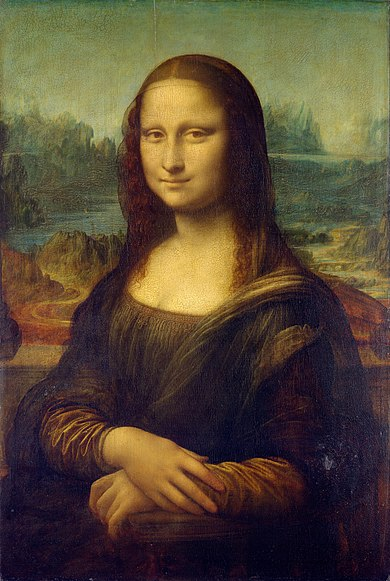

La Joconde
Auteur:
Léonard de Vinci
Date:
Réalisé de 1503 jusqu'en 1519
Description:
Mona Lisa est assise dans une loggia, une sorte de balcon. Derrière elle, on voit le paysage qu’elle regarde d’habitude: Des vallées, un fleuve avec un pont, des chemins qui serpentent et guident le regard jusqu’au fond de l’image. Le paysage paraît flou, Léonard de Vinci traduit la réalité observée avec honnêteté, on ne voit pas tout parfaitement, notre oeil fonctionne comme un appareil photo qui fait une mise au point sur certains éléments et laisse lesautres flous. C’est le cas du paysage ici, puisque le portrait est net et détaillé. Le peintre à mis au point une technique appelée sfumato (dégradé en italien) qui permet de passer d’un plan à l’autre de l’image de manière douce, sans limites nettes ou contours aux lignes dures. Plus on s’éloigne, plus le paysage se fond dans une sorte de brume, jusqu’aux montagnes qui se confondent avec le ciel.
